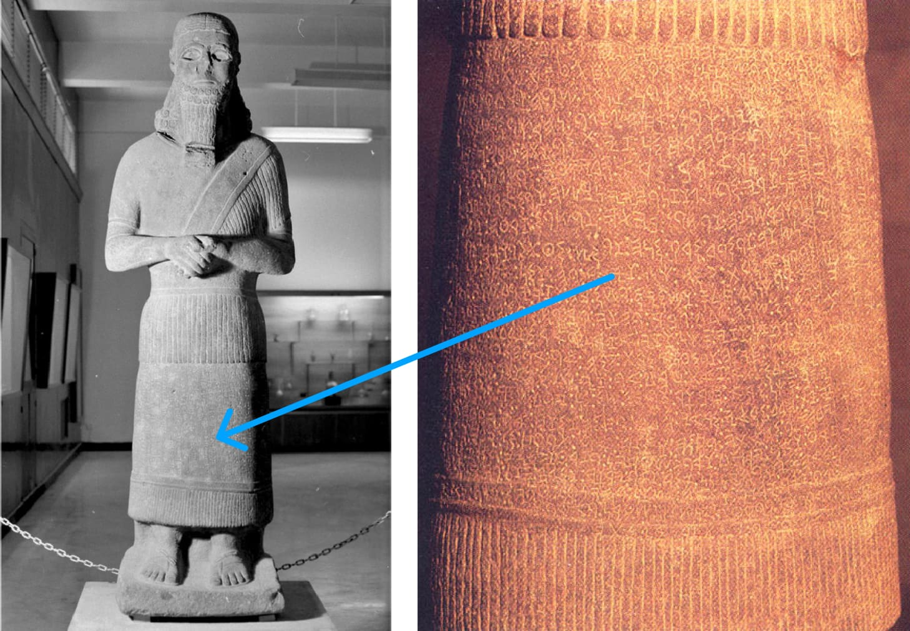
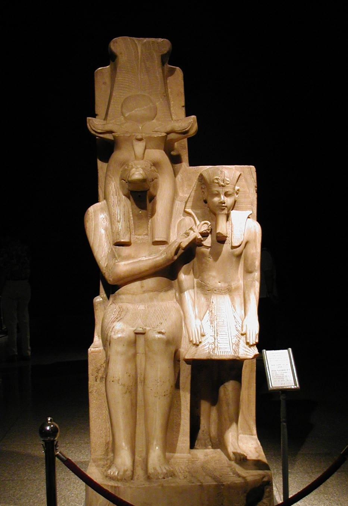
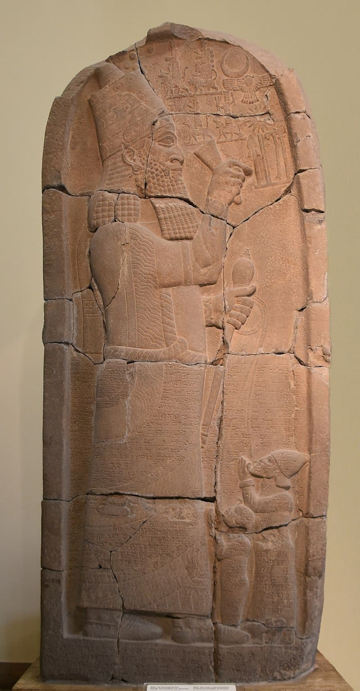
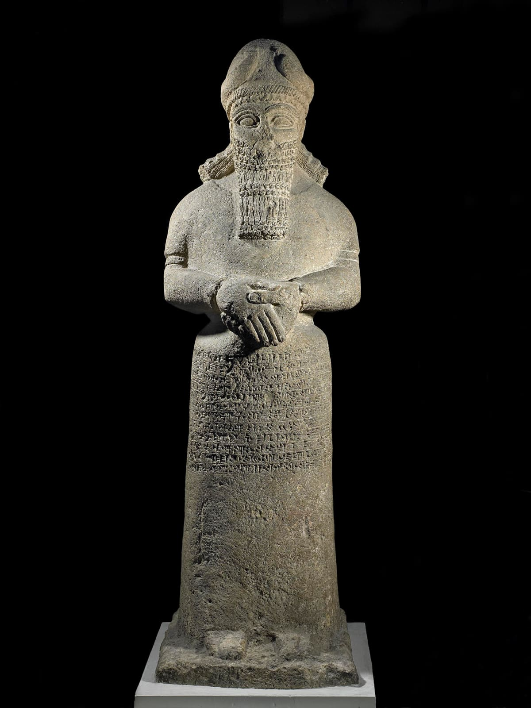

Class Notes: Heaven and Earth
111 of 141
Session 28: Humans as the Image, or Idol, of God
Key Takeaways
The Hebrew word for “image” is tselem, which literally means “idol.” In the ancient world, idols were
said to embody a deity or a king.
Idols can serve a priestly function by mediating for the deity they embody, or they can serve a royal
function by representing the king. Human images do both as a kingdom of priests for the true King
Yahweh (Exod. 19:4-6).
God commands humans not to make idols because humans are the idol of God.
The Image of God = God’s Idol Statue in His Cosmic Temple
The words “image” (Heb. tselem / צלם) and “likeness” (Heb. demut / דמות) are most commonly used to refer to
physical statues of stone or wood, and these words are usually translated “idol” or “statue.” Let’s look at some
examples.
Numbers 33:51-52 NASB*
51 Speak to the sons of Israel and say to them, “When you cross over the Jordan into the land of Canaan, 52
then you shall drive out all the inhabitants of the land from before you, and destroy all their figured stones,
and destroy all their molten images and demolish all their high places.”
*Key Words Adapted by Teacher
2 Kings 11:18 NASB
All the people of the land went to the house of Baal, and tore it down; his altars and his images they broke
in pieces thoroughly ...
“Genesis 1:26 can only be understood against the background of an ancient Yahweh statue … humanity is
regarded as the statue of God … The terms 'image' and 'likeness' are used as synonyms denoting a 'statue.'
Humans were thus created to be the living statues of the deity … There was no need of a divine image
because humans represented Yahweh as a statue would have done.”
Niehr, Herbert (1997). In Search of YHWH’s Cult Statue in the First Temple. Peeters Publishers. 93-94.
“To appreciate the full force of this image-of-God-in-humanity theology, we must have in mind the role of
idols in ancient Near Eastern religion … where an idol is set up to be the real presence of the god. Because
the god is really believed to inhabit the image, the image is the god, and its proper care and veneration
guarantees the god’s benefits and protection for the worshipping community … With this understanding of
divine images assumed, [Genesis 1] has a sharply focused theological anthropology: Humanity is to be the
eyes, ears, mouth, being, and action of the creator God within his creation … This point gives the biblical
Class Notes: Heaven and Earth
112 of 141
prohibition of idolatry its strongest possible rationale: for humans to make an idol is foolish because it fails
to appreciate that according to the original order of creation, it is humanity that functions in relation to God
as do the idols in relation to their gods.”
Fletcher-Louis, Crispin (2004). “God’s Image, His Cosmic Temple, and the High Priest: Towards an Historical
and Theological Account of the Incarnation.” Heaven on Earth: The Temple in Biblical Theology. Paternoster.
83-84.
“[T]his unifying image in humankind has a sacramental as well as an essentially corporal function: Adam
beings are animate icons … the peculiar purpose for their creation is “theophani”: to represent or mediate
the sovereign presence of the deity within the central nave of the cosmic temple, just as cult-images were
supposed to do in conventional sanctuaries. [This means that] humanity is an inherently ambivalent
species, whose ... existence blurs, by design, the otherwise sharp distinction between creator and
creation.”
McBride, Sean Dean (2000). “Divine Protocol: Genesis 1:1-2:3 as Prologue to the Pentateuch.” God Who
Creates. Eerdmans. 16-17.
The Image of God = Humanity as God’s Royal Image
As noted above, the purpose of humanity’s appointment as the divine image is royal rule over creation. In
Genesis 1, it is clear that God alone has the unique mastery and power over the chaotic nothingness, and he
alone can speak reality into an ordered existence. But now, humanity is appointed as God’s delegated ruler
and an embodied physical image of the divine rule.
“Just as powerful earthly kings, to indicate their claim to dominion, erect an image of themselves in the
provinces of their empire where they do not personally appear, so humans are placed on the earth in God’s
image as God’s sovereign emblem.”
von Rad, Gerhard (1973). Genesis: A Commentary (Old Testament Library). John Knox Press. 60.
“[In Genesis 1] the imago Dei refers to human rule, that is, an exercise of power on God’s behalf in creation
… This delegation of, or sharing in, God’s rule suggests the image is “representative,” designating the
responsible office and task entrusted to humanity in administering the earthly realm on God’s behalf …
[However] the meaning of “rule” goes well beyond our contemporary hermeneutical preconceptions. The
royal metaphor … integrally includes wisdom and artful construction. The God who rules creation by his
authoritative word is also the supreme artisan who constructs a complex and habitable cosmic structure …
The humans are called to imitate or continue God’s own creative activity by populating and organizing the
remaining unformed and unfilled earth. God has, in other words, started the process of forming and filling,
which humans, as God’s earthly delegates, are to continue.”
Middleton, J. Richard (2005). The Liberating Image: The Imago Dei in Genesis 1. Baker Academic. 88-89.
Ancient Near Eastern Background of Royal Representative Images
The statue of the Syrian king Hadad-iti (9th century B.C.E.) is dedicated to Adad (= Baal), the patron storm god
of Syria, and described in precisely the language of Genesis 1:26. The statue of the king embodies and


Class Notes: Heaven and Earth
113 of 141
represents Adad’s authority.
Left: Pitard, Wayne (2018). Vici. Right: The BAS Library (1991)
Ducher, Gerard (2006). Wikimedia Commons
In Egyptian royal ideology, the Pharaoh was called “the image of Re” (Re = the sun deity, chief of the
Egyptian pantheon).
Pharaoh Ahmose I (1550-1525 B.C.E.) was called “the prince of Re, the child of Qeb, his heir, the image
of Re whom he created, the representative, for whom he has set himself on earth.”
Queen Hatepshepsut (1479-1457 B.C.E.) is described as “superb image of Amon, the image of Amon on
earth, the image of Amon-Re to eternity, his living monument on earth.”
Amenhotep II (1427-1400 B.C.E.) was titled “image of Re,” or “image of Horus,” or “holy image of the lord
of gods.”
Amenhotep III (1390-1352 B.C.E.) was called by Amon “my living image, creation of my members, whom
Mut bore for me.”
For more examples and discussion, see David J.A. Clines, “The Image of God in Man,” Tyndale Bulletin, vol. 19.
“Central to this ideology was the divinity of the pharaoh, by which he was set apart from all other human
beings ... [T]he central function of the king was his cultic, intermediary function of uniting the earthly and
divine realms. The pharaoh was thought, in a fairly strong sense, to be a physical, local, incarnation of the


Class Notes: Heaven and Earth
114 of 141
deity, analogous to that of a cult statue or image of a god, which is also such an incarnation ... The king ...
was a place where the god manifested himself and was a primary means by which the deity worked on
earth.”
Middleton, J. Richard (2005). The Liberating Image: The Imago Dei in Genesis 1. Baker Academic. 109-110.
Mortel, Richard (2020). Wikimedia Commons
Mesopotamian (Assyrian and Babylonian) Examples
A letter from Adad-shumu-usur, the court astrologer in the reign of Assyrian king Esarhaddon (670s B.C.E.)
says, “The king, the lord of the world, is the very image of Shamash.”
Another letter from Adad-shumu-usur to Esarhaddon, where he describes both the king and his late father,
says, “The father of the king, my lord, was the very image of Bel, and the king, my lord, is likewise the very
image of Bel.”
This is discussed in Simo Parpola's Letters from Assyrian and Babylonian Scholars, letters #196 and #228.
The Trustees of the British Museum (2023). (CC BY-NC-SA 4.0) British Museum.
Class Notes: Heaven and Earth
115 of 141
“[In ancient royal ideology,] the king is the image of the god. This widely attested functional similarity
between the king and god in Mesopotamia, whereby the king represents the god by virtue of his royal
office and is portrayed as acting like the god in specific ways, provides the necessary background for
understanding the descriptions of the king as the image of a god ... [This] provides the most plausible set
of parallels for interpreting the imago Dei in Genesis 1 … Humanity is dignified with a status and role … that
is analogous to the status and role of kings in the ancient Near East. Genesis chapter 1 ... thus constitutes a
genuine democratization of ancient Near Eastern royal ideology. As imago Dei, humanity is called to be the
representative and intermediary of God’s power and blessing on earth.”
Middleton, J. Richard (2005). The Liberating Image: The Imago Dei in Genesis 1. Baker Academic. 121.
The Ritual Transformation of the Divine Image
In Mesopotamian culture, statues of the gods underwent rituals called mîs-pî (“mouth washing”) and pît-pî
(“mouth opening”) accompanied by ritual incantations and blessings, in which the deities’ presence became
one with the statue.
“These statues, having gone through the purification, charging, and activating rituals, were then effectively
considered to be the god ... After the ceremony, the statue which had become a god was no longer
referred to as an “image.” Instead, it was referred to by the name of the god or goddess represented. It was
clothed, fed, and cleaned on a daily basis, as if it were alive. ... [Through] this ritual transformation, the
image did not “stand for” but actually was a manifestation of the subject represented.
The image in ancient Mesopotamia should not be conceptualized as a mere statue or monument, because
modern conceptions of portraiture are too often attached to those ideas. The ancient ‘image’ (Hebrew
tselem / Akkadian tsalmu) is not a “replica” … after the transformation ritual the image becomes and
extension or manifestation of the referent.”
Herring, Stephen. (2008). “A ‘Transubstantiated’ Humanity: The Relationship Between Divine Image and the
Presence of God in Genesis 1:26-28.” Vetus Testamentum, Vol. 58. Brill. 483, 485, 488-489.
This sheds important light on the two passages about humanity’s divine task in Genesis 1 and 2.
Genesis 1:27-28 NIV*
27 And God created human in his image,
in the image of God he created him;
male and female he created them.
28 And God blessed them, and God said to them, “Be fruitful and multiply, and fill the land, and subdue it;
and rule over the fish of the sea and over the birds of the sky and over living creature that creeps on the
land.”
*Key Words Adapted by Teacher
Genesis 2:7, 15 NASB*
7 Then the LORD God formed the human of dust from the ground, and breathed into his nostrils the
breath of life; and man became a living being. ... 15 Then the LORD God took the human and put him into
the garden of Eden to work it and keep it.
Class Notes: Heaven and Earth
116 of 141
*Key Words Adapted by Teacher
In Genesis 1, God creates and appoints a human image and then pronounces a ritual blessing over the image
as they are commissioned. This is modeled after the transformation rituals of Mesopotamian statues.
In Genesis 2, notice the focus on the transformation of a clay statue (“formed” is a standard Hebrew word for
clay manufacture) into a “living being” by means of divine breath. This is followed by a commission of the
animated statue to work in the priestly precincts of the garden.
This portrait of humans as divine and royal images of Yahweh is precisely the claim of Psalm 8, which is the
product of a sustained meditation on Genesis 1 and 2.
A
1 O Yahweh, our LORD, how majestic is your name in all the land,
B
You who have displayed your splendor above the skies !
C
2 From the mouth of infants and nursing babies
You have established strength
because of your adversaries,
to make the enemy and revengeful cease.
B
3 When I consider your skies, the works of your fingers,
the moon and the stars, which You have established,
C
4 what is human that you remember him,
and the son of human that you care for him?
B
5 Yet You have made him a little lower than elohim,
yet with glory and majesty you have crowned him!
6 You made him a ruler over the works of your hands ;
you have put all things under his feet
C
7 All sheep and oxen, and beasts of the field,
8 The birds of the heavens and the fish of the sea,
whatever passes through the paths of the seas.
A
9 O Yahweh, our LORD, how majestic is your name in all the land.
Class Notes: Heaven and Earth
117 of 141
Psalm 8. Translation and Literary Design by Tim Mackie for BibleProject Classroom: Heaven and Earth (2019).
Reflection Question
What is an idol meant to be in the ancient world, and how is humanity to function like an idol, or image, of
God?
Class Notes: Heaven and Earth
118 of 141
Session 29: The Image of God in the Storyline of the
Bible
Key Takeaways
Daniel 7 is a meditation on Genesis 1-3, where humans give up their role as embodied divine rulers to an
animal. They'd rather trust in themselves than in God. And by doing so, they become like beasts.
Genesis 3:15 gives us hope in the form of a coming seed, who we learn will be the Messiah or anointed
one. In the New Testament, “Christ” means “anointed one.” So Jesus is depicted as the true human and
image of God, the seed of Genesis 3:15.
The Image of God in the Storyline of the Hebrew Bible
In Genesis 1:26-28, we are told that humanity, male and female together, constitute the royal image of God.
God appoints humanity to rule the world on his behalf and receive his blessing as they multiply in a land of
abundance.
Genesis 1 is a template for the entire biblical story. This first chapter shows us God’s ideal design for his world:
royal human partners, the kings and queens of creation, ruling together in an abundant world during the
eternal seventh-day rest.
Genesis 2-5 tells us about the first human characters who are given the opportunity to rule together as God’s
image. Unfortunately, these humans foolishly forfeit their divine roles. They are deceived by a snake and
choose to define good and bad on their own terms instead of acting “in the fear of Yahweh.”
In Genesis 3:14-15, God says he is going to humiliate the snake (“you will eat dust all the days of your life,”
Gen. 3:14) and that a “seed of the woman” is going to “strike” the snake’s head one day while the snake strikes
the heel of the woman’s seed (Gen. 3:15).
Genesis 5:1-3 shows us that this promised line of the seed will be carried on through Seth, Adam and Eve’s
third son.
Genesis 5:1-3 Instructor's Translation
1 This is the scroll of the generations of ’adam: In the day when God created Adam, in the likeness of God
he made him, 2 male and female he created them, and he blessed them and he named them ’adam in the
day when they were created. 3 And Adam had lived one hundred and thirty years, and he became the
father of a son in his own likeness, according to his image, and named him Seth.
Notice that ‘adam’s relationship to God is described as “image and likeness,” which recalls all of the meaning
and significance of Genesis 1:26-28. Now, here in Genesis 5:1-3, Seth is described as his father’s image and